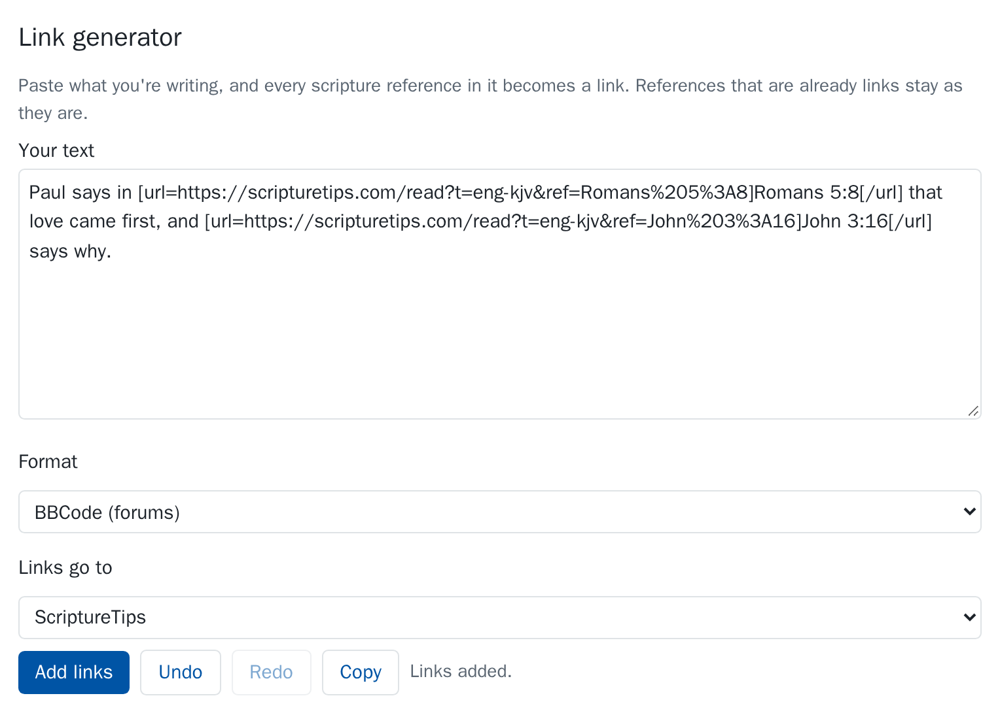

The link generator links the references in something you are writing, for people who don't have the extension: a forum post, a blog article, a wiki page or an email.

A forum post after Add links, in BBCode.
Using it
Click the extension's toolbar button, then Link generator. It opens in a new tab.
Paste or type your text into Your text.
Choose the Format your site uses, and where the Links go to.
Click Add links, then Copy, and paste it where you're writing.
Formats
Format
A link looks like
HTML
<a href="…">John 3:16</a>
BBCode (forums)
[url=…]John 3:16[/url]
Wiki markup
[… John 3:16]
Markdown
[John 3:16](…)
The format it starts with is set under Link generator on the settings page.
Good to know
References that are already links, in any of the four formats, are left as they are, so running it twice changes nothing.
Undo and Redo step back and forward through each time you added links.
If there is nothing to link, it says “No references to link.”